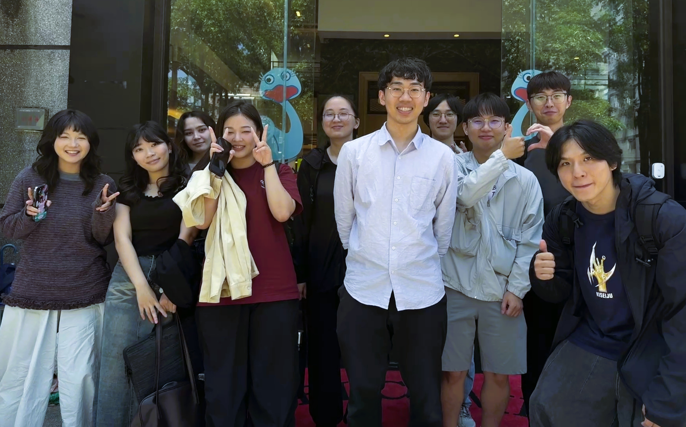

Yang Huang 黃揚
Assistant Professor 助理教授
Department of Business Administration 企業管理學系
National Chung Hsing University 國立中興大學
✉ yanghuang@dragon.nchu.edu.tw
📍 社管大樓 634, 興大路 145 號, 台中市南區 402, Taiwan
About Me
Yang Huang (黃揚) is currently an Assistant Professor in the Department of Business Administration at National Chung Hsing University. He received his Ph.D. in Information Management from National Yang Ming Chiao Tung University in 2024. Prior to joining NCHU, he served as a Postdoctoral Researcher at National Yang Ming Chiao Tung University and as a Visiting Researcher in the Department of Computer Science at the University of Manchester. His research interests include recommendation systems, machine unlearning, and applied machine learning, with a particular focus on deep learning-based personalized recommendation and privacy-preserving AI.

Research Interests
-
Recommendation Systems 推薦系統 — I develop deep learning-based personalized recommendation models across diverse domains, including games, music, news, hashtags, and short videos, with a focus on combining social and content signals to improve recommendation quality.
-
Machine Unlearning 機器遺忘 — My recent work explores recommendation unlearning, which allows trained models to selectively forget specific user data without the need for full retraining. This work touches on practical concerns such as privacy protection, the right to be forgotten, and responsible data governance in AI systems.
-
Applied Machine Learning 機器學習與資料分析 — I apply machine learning to real-world forecasting and prediction problems, with a particular interest in time series modeling and fault detection across domains such as energy, environment, and agriculture.